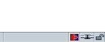

CHAPTER 8 Tutorial:
Building the WebLock UI
Up until now, we've been building a component that can be installed in any Gecko application. The XPCOM interfaces and tools you've used have been general, cross-platform, and available in the Gecko Runtime Environment or in any Gecko-based application after Mozilla 1.2 (when the GRE began to be used).
In this chapter, however, we are going to be building a user interface for the WebLock component that's meant to be added to the existing Mozilla browser1. It uses XUL, which is an XML language that Gecko knows how to render as user interface, but it also interacts with particular parts of the Mozilla user interface, where it must install itself as an extension to the UI. Specifically, the user interface we create in this chapter will be overlaid into the statusbar of the browser component, where it will provide a small icon the user can click to access the web lock interface (see Figure 1).

Figure 1. WebLock Indicator in BrowserUser Interface Package List
The user interface described in this section is comprised of four files:
- webLockOverlay.xul is the file that defines the little status icon in the browser.
- weblock.xul defines the web lock manager dialog.
- weblock.css provides style rules for both of the XUL files.
- weblock.js provides JavaScript functions for both of the XUL files.
Each of these files is described briefly in the sections below. In the following chapter we'll describe how you can take these files and create a package, an installable archive that includes the WebLock component and the new UI.
Because this step (particularly the overlay section) is so dependent on Mozilla, the chapter is divided up into a couple of different sections. The second section, "XUL", describes the XML-based User Interface Language (XUL) and how you can use it to create a dialog that provides access to the WebLock component and its services. The third section, "Overlaying New User Interface Into Mozilla", describes how to create an overlay into the browser that will make this dialog accessible from a Mozilla build. The overlay section, where we discuss how to import scripts, images, and other resources from Mozilla into your own UI, is by far the more complicated of the two.
If the WebLock component is being installed in Mozilla or another Gecko-based browser, then this third section shows you how to create the entry point in the browser for controlling the web locking. If you are planning on deploying the WebLock component in some other application, you'll have to devise a different means of access (e.g., native widgetry that instantiates and controls the WebLock component).
Client Code Overview
Before we get started on the actual user interface, we should establish how the client code is to access the WebLock component and use its interfaces to control the web locking of the browser.
First of all, it's important to be able to represent the basic state of the lock as soon as it's loaded. Like the secure page icon, the weblock icon that appears in the lower right corner of the browser should indicate whether the browser is currently locked or unlocked. Since the WebLock component is always initialized as unlocked, we can have the client code-the JavaScript code in the interface-represent this state and track it as the user manipulates the iWebLock interface. A boolean wLocked variable can do this:
Then the functions that get called from the interface and call through to the lock and unlock methods of the WebLock component must also adjust this variable accordingly:
function wLock() { // check to see if locking is on or off weblock.lock() wLocked = 1; } function wUnLock() { // check to see if locking is on or off weblock.unlock() wLocked = 0; }
An important preliminary of these functions is that the WebLock component be made available to the JavaScript in the form of the weblock object being used in the snippets above. As you can see, weblock is initialized as a global JavaScript variable, available in the scope of these functions and others:
In addition to this basic setup, you must also write JavaScript that uses the AddSite method to add new sites to the white list. This is a bit more complicated, because it requires that you work with the currently loaded page or provide other UI (e.g., a textfield where you can enter an arbitrary URL) for specifying URLs. In the "XUL" section below, we'll go into how the user interface is defined. This section describes the functions that are called from the interface and how they interact with the WebLock component.
The URL that the AddSite method expects is a string, so we can pass a string directly in from the user interface, or we can do a check on the string and verify that it's a valid URL. In this tutorial, focusing as it is on the WebLock functionality (rather than the UI), we'll assume the strings we get from the UI itself are URLs we actually want to write to the white list:
function addThisSite() { tf = document.getElementById("dialog.input"); // weblock is global and declared above weblock.AddSite(tf.value); }
This JavaScript function can be called directly from the XUL widget, where the input string is retrieved as the value attribute of the textbox element.
You also need to create the function that displays the WebLock window itself when the user clicks the weblock icon in the statusbar. That function uses the openDialog method from the window object and takes the URL to the XUL file in which the dialog is defined:
function loadWebLock() { openDialog("chrome://weblock/weblock.xul"); }
XUL
The entire user interface of the Mozilla browser and all of the applications that go with it, including the mail client, the IRC client, and others, have been defined in an XML language called XUL. Elements in the XUL markup map to widgets in the interface that Gecko renders in a fairly straightforward way-so, for instance, the root element of an application window is the element <window>, the root element of the dialog we'll be creating here is <dialog>, and so forth. Within a XUL application file, elements like button, menu, checkbox can be hooked up to an event model, to scripts, and to the XPCOM interfaces that carry out a lot of the browser functionality in Mozilla.
In the chapter Using Components, you saw how XPCOM objects are reflected into the interface layer as JavaScript objects. In this chapter, now that we've created the WebLock component and made it available to XPCOM, we create the UI that actually instantiates the WebLock component and uses its methods to control page loading in the browser.
In the previous section, we outlined the JavaScript that interacts with the WebLock component. In this section, we are going to create the XUL interface that calls the JavaScript methods when the user interacts with it.
The XUL Document
The first thing to do is create the actual XUL document in which the user interface for the dialog and the events that initiate interaction with the web locking are defined. At the top of all XUL documents, an XML declaration is followed by the root element for the document, which is usually <window> but for dialog boxes can also be the element <dialog>. The "shell" for the XUL file, then, looks like this:
Note that this part of the XUL file also contains a stylesheet declaration, which imports CSS rules and applies them to particular parts of the interface. In Gecko, CSS is used to do virtually all of the presentation of the XUL interface-its color, position, style, and to some extent its behavior as well. The web lock manager dialog does not deviate from the look of a standard dialog, so it can use a single declaration to import the "global" skin from the browser and make it available to the widgets you define in weblock.xul.
You can save this first, outermost part of the web lock dialog in a file called weblock.xul, which you'll be adding to an installer archive in Appendix B in this book.
Note that this file defines the dialog that displays when the user/administrator clicks the web locking icon in the bottom right corner of the browser. That piece of UI-which needs to be dynamically inserted into the browser at run-time-is described in the following section, "Overlaying New User Interface Into Mozilla".
The finished dialog appears in Figure 2 below.
Figure 2. Web Lock Manager DialogAs you can see, it's a simple interface, providing just enough widgetry to lock and unlock the browser, and to add new sites to the list. The entire XUL file for the web lock manager dialog is defined in the "weblock.xul" subsection below.
The Locking UI
Once you have the basic XUL wrapper set up for your interface, the next step is to define that part of the interface that locks and unlocks the browser. One of the most efficient ways to expose this is to use radio buttons, which allow the user to toggle a particulart state, as the figure above illustrates.
In XUL, individual radio elements are contained within a parent element called radiogroup. Grouping radio elements together creates the toggling UI by requiring that one or another of the elements be selected, but not both.
The XUL that defines the radiogroup in the web lock manager dialog is this:
Since the WebLock component always starts up in the unlocked position, you can set the default selected="true" property on the unlock radio button and reset it dynamically as the user takes action.
Site Adding UI
The next step is to create that part of the user interface that lets you add a new site to the white list. There are other, more sophisticated ways to do this; you may also want to include some UI that lets you view the whitelist or edit it as a list. In this part of the tutorial, however, we only provide the means of adding an URL provided as a string (and not checked for validity) and passing it through to the AddSite API we defined in the earlier part of the tutorial.
This snippet introduces a couple of new general layout widgets in XUL. The separator that appears at the top of this snippet creates a little divider between widgets like the kind you see in menus that divide sets of functionality available there. The parent of the textbox that users enter an URL into is something called an <hbox>, which is a layout widget-often invisible-that controls the way its child elements are rendered. In this case, the hbox centers the textbox and the button children, and it orients them horizontally (in contrast to the vbox, which orients its children veritically).
Notice also that when it's clicked, the button executes a JavaScript function called addThisSite(), which we've already defined in the weblock.js file in the "Client Code Overview" section above.
weblock.xul
Overlaying New User Interface Into Mozilla
You've got a dialog that will interact with the WebLock component, but how do you install that dialog you've created into the browser? And how do you access it once it's in? Once it's installed and registered, the WebLock component itself is ready to go: XPCOM finds it and adds it to the list of registered components, and then WebLock observes the XPCOM start up event and initializes itself.
But you still have to insinuate your new UI into the browser so it can call the component, and the Mozilla overlay mechanism is the way to do this. Overlays are XUL files that register themselves to be dynamically inserted into the appropriate parts of the browser UI at runtime.
webLockOverlay.xul
The XUL that defines the new icon is small: it's a little icon that has an image associated with it, and that calls a JavaScript function to loads the weblock.xul file we defined in the previous section. The icon is actually a separate <statusbar> element that gets overlaid into the main browser, along with some JavaScript and some CSS to control the behavior and appearance of the element, respectively. Here is that XUL file in its entirety:
Figure 3. The WebLock OverlayNote that the root element for this file is not a window but an overlay. In overlays, the ordinarily unique ID attributes that XUL elements use to distinguish themselves are purposely made redundant with UI in the existing browser with which they should be merged. In this case, the weblock statusbarpanel appears as a child of the statusbar element with ID "status-bar". This ID is the same one used by the statusbar in navigator.xul, which means that the overlay mechanism will merge the new UI here (i.e., the weblock statusbarpanel) and the UI already defined within that browser statusbar at runtime.
Other Resources
This chapter describes the remaining files that must be added to and packaged up with the WebLock component to provide user interface for web locking.
weblock.css
The following style rules are defined in weblock.css, a CSS file that is loaded by the overlay and applied to the icon in the browser that reflects the current status of the web lock and provides access to the web lock manager dialog.
The style rules are distinguished by the state of the status attribute on the element in the XUL with the ID "weblock-status." As you can see above, when the status of the element is set to "locked", the image wl-lock.gif is used to show the state, and when the web locking is unlocked, it uses wl-un.gif. (Note: We include three images to represent the state of the weblock, but wlock.gif and wl-lock.gif are identical, since weblock is presumed to be unlocked when it's loaded. This tutorial makes use of only two different states, but you can further customize the look of the weblock using the three images if you wish.)
Since the presentation of the weblock manager dialog itself doesn't require any special styles, these are all the rules you need in the weblock.css. Note that the weblock.xul file in which the manager is defined imports only the global skin:
<?xml-stylesheet href="chrome://global/skin/" type="text/css"?>Save weblock.css in your working directory.
You should now have the four files listed at the top of this chapter as the "packing list" for the WebLock package (see "User Interface Package List"). Don't worry for now about where these files are. In the next chapter, "Tutorial: Packaging WebLock", we'll describe how to organize and package them so that they can be installed along with the WebLock component itself and the other resources.
Image Resources
If you are following along with this tutorial and want to use the images we use here for the states of the WebLock component in the statusbar, you can download them and the other resources for WebLock from http://www.brownhen.com/weblock. The GIF files that represent the various states are:
1 Or one very much like it. There are Gecko-based browsers such as Beonex and the IBM Web Browser that share a lot of the structure of the Mozilla user interface, into which it may be possible to install both the WebLock component and the user interface described in this chapter.
| Copyright (c) 2003 by Doug Turner and Ian Oeschger. This material may be distributed only subject to the terms and conditions set forth in the Open Publication License, v1.02 or later. Distribution of substantively modified versions of this document is prohibited without the explicit permission of the copyright holder. Distribution of the work or derivative of the work in any standard (paper) book form is prohibited unless prior permission is obtained from the copyright holder. |